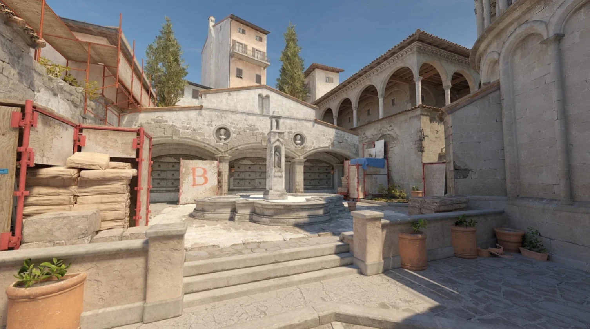
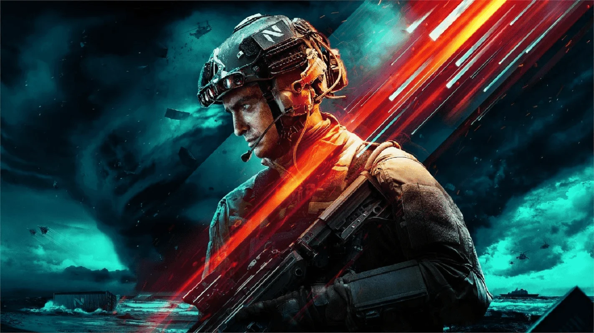
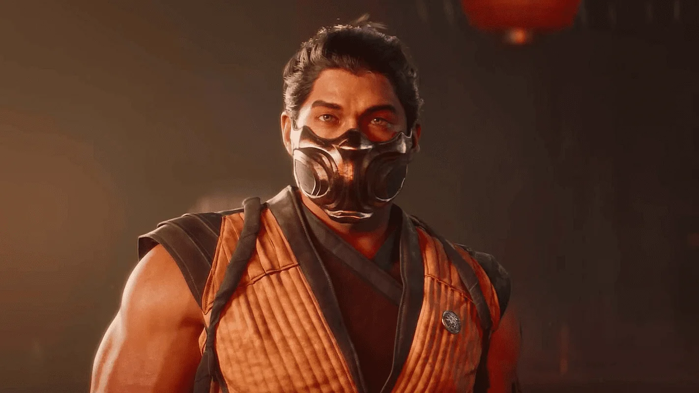
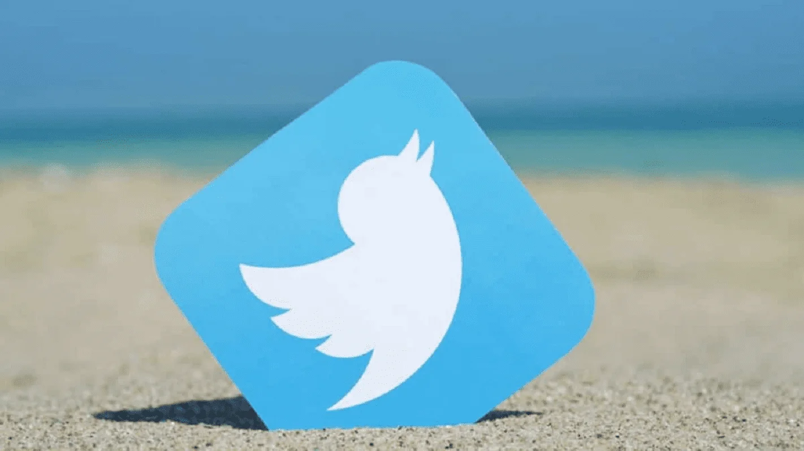

Миллиардеры Маск и Цукерберг устроят бой в клетке.
История о поединке Марка Цукерберга и Илона Маска, владельцев двух самых
популярных в мире социальных сетей, началась с шутки, но вскоре приобрела
все признаки реального события. Глава UFC Дэйна Уайт уже демонстрирует футболку с
надписью Zuckerberg VS Musk и хлопочет об организации боя, спортсмены тренируют бойцов,
а букмекеры создали рынок гипотетических ставок и оценили, у кого больше шансов на победу
в поединке. Миллиардеры еще не подтвердили ни дату, ни место схватки, зато успели в очередной
раз стать героями мемов.
Apple впервые показала гарнитуру Vision Pro
На конференции разработчиков WWDC в этом году Apple впервые представила совершенно новый
гаджет — гарнитуру смешанной реальности под названием Vision Pro. Инженеры компании из
Купертино подробно рассказали и показали весь функционал новинки. У нее не будет проводов,
а все управление осуществляется глазами, руками и голосом, никаких дополнительных устройств.
В Counter Strike 2 добавили осмотр гранат и случайно показали ремейк Inferno

В марте Valve анонсировала Counter-Strike 2, но до сих пор шутер находится на стадии бета-тестирования. Несмотря на это, разработчики стабильно обновляют игру: недавно, например, изменили меню закупки снаряжения. А в сегодняшнем обновлении появилась возможность осмотреть гранаты.
Для каждой гранаты, будь это коктейль Молотова или световая граната, есть собственная анимация осмотра. Вероятно, в будущем в игре появятся камуфляжи и на этот тип снаряжения — намёки на это уже давно появлялись в файлах игры.
Раз речь зашла про скрытые файлы, то в сегодняшнем обновлении Valve случайно оставила скриншоты ремейка карты Inferno. Зачастую такие изображения предназначены для экранов загрузки. По ним видно, что карта претерпит второе глобальное изменение (в первый раз её поменяли в 2016 году), а ключевые локации уже готовы.
Мистический сериал «Извне» продлили на третий сезон
Мистический сериал «Извне» про группу людей, которая попадает в загадочное место с монстрами и странными явлениями, продлили на третий сезон.
Изначально проект от продюсеров «Остаться в живых» выходил на канале Epix, но последний позже переформировали в MGM+. На этой платформе история в стиле Стивена Кинга стала второй по популярности, уступив лидерство «Крёстному отцу Гарлема».
Сюжет шоу рассказывает про маленький американский городок, где оказываются случайные путники — и уже не могут выбраться в большой мир. У них нет связи с остальными людьми, а по ночам их преследуют зловещие монстры — те могут принимать облик их знакомых.
Кроме того, в местных лесах скрыто множество разных тайн, которые тоже предстоит разгадать персонажам. Поиску дополнительных ответов, видимо, посвятят и третий сезон — его релиз намечен на 2024 год.
Battlefield 2042 получит свежее обновление на грядущей неделе

Как сообщает DICE, на грядущей неделе для Battlefield 2042 выйдет обновление 5.1.0, которое должно исправить ряд внутриигровых ошибок и внести некоторые улучшения.
Среди нововведений ожидаются дополнительные модули для винтовок, улучшения при дислокации, включая появление сообщения о статусе «здоровья» транспортного средства, улучшения игрового процесса Hazard Zone и не только. Полный патчноут можно найти здесь.
Кроме этого, разработчики подтвердили, что в этом месяце стартует и сезонное событие. Игроков ждёт новая косметика и другие сюрпризы. Подробнее об ивенте обещали рассказать позже.
На грядущем стриме по Mortal Kombat 1 покажут больше Скорпиона и Джонни Кейджа

В четверг, 6 июля, пройдёт новая трансляция Kombat Kast, в рамках которой NetherRealm Studios раскроет больше информации о Mortal Kombat 1.
В частности, нам обещают разбор геймплея за Скорпиона и Джонни Кейджа, подробное обсуждение Камео и не только.
Грядущий стрим Kombat Kast можно будет посмотреть в 20:00 МСК на официальном канале NetherRealm на Twitch.
Релиз самой Mortal Kombat 1, напомним, ожидается 19 сентября на PC, PS5, Xbox Series и Nintendo Switch. Кстати, в создании музыки для игры принимал участие композитор Devil May Cry 5.
Напомним также, что в настоящее время идёт работа над продолжением фильма «Мортал Комбат».
Илон Маск установил новое ограничение в Twitter

В Twitter произошли очередные изменения: теперь пользователи могут читать ограниченное число постов в день.
Об этом сообщил сам Илон Маск, объяснив нововведение способом борьбы с системными манипуляциями и скрапингом данных, достигшими экстремального уровня. Теперь:
верифицированные учётные записи могут просматривать 6000 постов в день
аккаунты без верификации — 600 постов в день
новые аккаунты без верификации — 300 постов в день.
Позже Маск в шуточной форме отметил, что ограничение должно помочь всему миру, а зависимые от Twitter наконец смогут выйти на улицу или провести время с близкими.
Кстати, судя по всему, оригинальный пост собрал рекордное количество просмотров, и Маск уже пообещал (действительно ли) увеличить установленный лимит до 10 тыс, 1000 и 500 постов в день соответственно.
Ранее мы сообщали о том, что незарегистрированные пользователи больше не видят посты в Twitter.